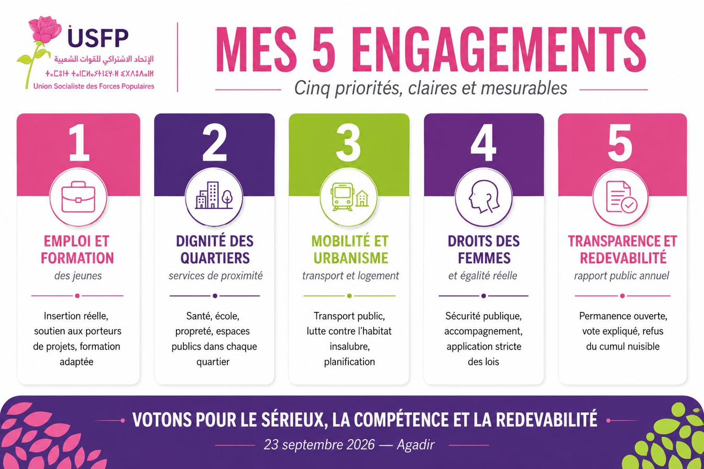
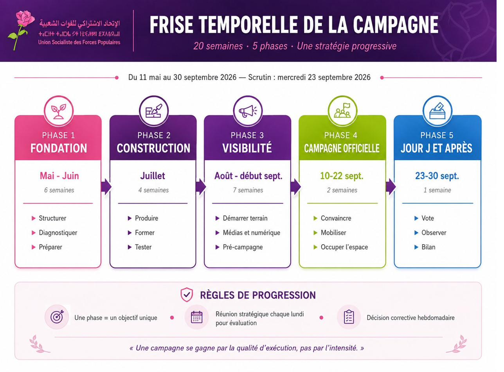

ليست وعوداً: بل محاور عمل مرتبطة بمقالات، شكايات، ملفات، وأفعال عمومية تستطيعون متابعتها.

ميثاق محلي للتشغيل والتكوين، مواكبة نحو التجربة المهنية الأولى، شراكات جماعة–مدارس–مقاولات–جمعيات.
الطرق، الإنارة، النظافة، الفضاءات العمومية، التجهيزات القُربية: لا حيّ يجب أن يُعامَل كحيٍّ من درجة ثانية.
مخطط تنقل يشمل الأحياء الطرفية، أمن الراجلين قرب المدارس، وإتاحة الولوج لذوي الاحتياجات الخاصة.
الولوج إلى الخدمات، الأمن في الفضاء العمومي، المشاركة في القرارات المحلية، دعم الاستقلال الاقتصادي للنساء.
نشر التصويتات، تقارير ثلاثية للنشاط، قراءة عمومية للميزانية، لوحة قيادة مواطنة دائمة.
هذه القائمة ليست جامدة. تُبنى أيضاً منكم: من ملاحظاتكم، تبليغاتكم، اقتراحاتكم ولقاءاتكم.
اقتراح التزام20 أسبوعاً، 5 مراحل، استراتيجية تصاعدية وواضحة.
